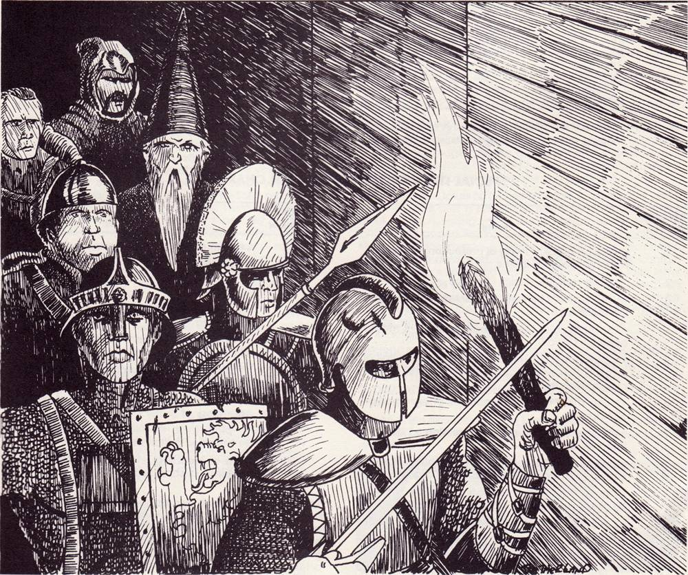

Appendix - Dungeon Delving
While the majority of adventures are through pre-planned and mapped out areas, the DM can elect to allow the players to take a detour and explore one of the many, many nameless catacombs, temples and mazes around the world of Dunia in the hope of rising out of the rubble stronger and richer. While doing so, they may use the rules for dungeon exploration listed below.
Formation: Before the journey begins, the party must decide on a marching order. Depending on what the party runs into, the will be attacked from the front, and in some rare cases from behind, so strategy will be necessary. So long as the front character is carrying a source of light, the rest of the party can see ahead. Otherwise, the dungeon is pitch black (save for temple rooms.)
Pace: In a dungeon, every turn takes 1 minute (10 combat rounds). This can be spent in a variety of ways: mostly moving down hallways and through rooms, optionally mapping out grids if the players wish, at the walking speed of the slowest member of the group. The party can sprint through areas they mapped before, running at double speed, or sneak forward at half-speed, allowing them to catch foes off guard. They can also spend their turn in the same room searching around for secret doors or mechanisms, or forcing a mechanism using STR bashing or Open Lock. At the end of every minute, the DM rolls a d20.
Resting: The party must rest once every half hour (30 turns) or risk fatigue, suffering a stacking -4 penalty to everything.
Grid Map: The dungeon's layout is largely procedurally generated, and all the rolls are done secretly by the DM, who only allows players a description of their surroundings. It consists of 6d6 ft long hallways separating rooms listed in the next
Room Types: After crossing every corridor, the DM rolls a d20 to decide what kind of room the party wandered into.
- 1: Enemy closet. Instantly force an elite encounter.
- 2-3: Vermin room. Instantly force an easy encounter. Difficult terrain due to rubble.
- 4-6: Trapped room. Roll d6 for DC: DEX (1-2) STR (3-4) or Disable Device (5-6). DC value is 15 if odd or 20 if even roll. Party takes DC as damage on failure.
- 7-10: Path forks to 2 individual branches.
- 11-16: An empty room. If another branch is yet unexplored, this is a dead end.
- 17-18: Treasure room. Check Treasure section.
- 19: Insane merchant room. They will have five random objects from the wondrous items for sale rolled by d20. If attacked, he and his merchandise teleport out immediately.
- 20: Temple to a god. Well lit. Roll d8 for its alignment. Praying at it restores health and removes debuffs once.
Random Encounters: Every 5 minutes (turns), the DM rolls d8. On a nat 8, they roll again to decide what kind of creatures the players wander into.
- 1: Elite encounter. 1d4 random enemies 1d4 levels higher than the party.
- 2-4: Risky encounter. 2d4 random enemies the same level as the party, nat 4 instead spawns one boss enemy 4 levels higher.
- 5-8: Easy encounter. 2d4 random enemies 1d4 levels lower than the party
An odd roll above 1 means they are attacked from behind.
Provided players weren't sprinting, the DM secretly rolls Listen DC 15 for the player with the strongest Listen skill to know whether the players should be alerted of the enemies ahead of time and gain an extra turn before any of the enemies act. If they were sneaking or searching when the encounter began, the Listen DC is only 10.
Treasure: Loot is generally seen as an abstraction. When an enemy of significant power perishes, they usually leave behind something of value; ivory tusks, jewelry, rare reagents, organs that fetch a solid price in the market, etc.
Loot from a successful fight is equal to 1d4 multiplied by the total levels of all enemies defeated in raw gp or a mix of gold and gems if needed, which the party can choose to pool or divide among themselves.
Loot obtained from a treasure room is different. The DM has the freedom to come up with whatever they think might be fit for the players, or they might roll randomly:
- The party's level * 1d4 * 10 gp, as gems if needed.
- One d20 from the wondrous item list
- 1d4 random weapons and armor at +1 for every 5 levels of the party.
Final Room: After 3d6+10 total rooms explored, the next room the adventurers encounter will be the final boss of the dungeon. The DM forces a boss encounter: an enemy 5 levels higher than the party, surrounded by 1d4 cohorts 1d4 levels higher than the party. After the foe is defeated, the party gains access to the final treasure room.